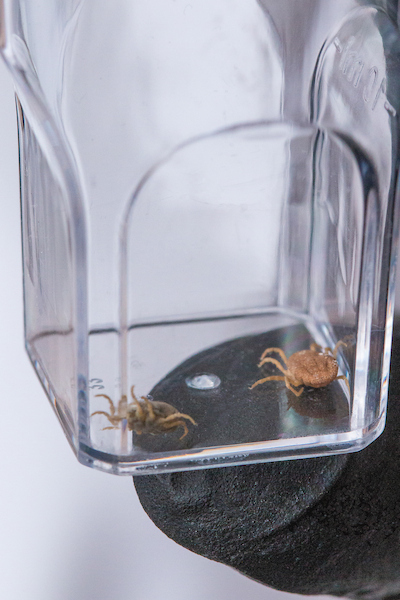
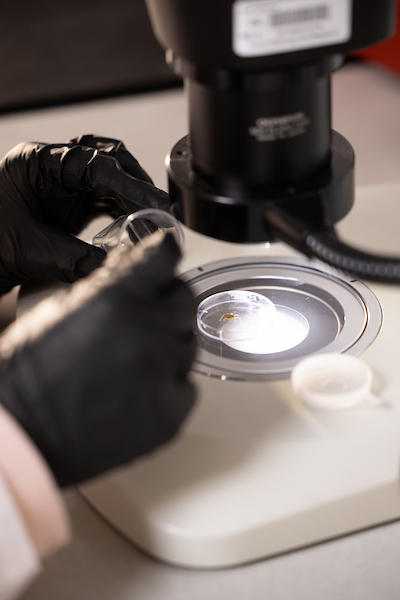

Welcome to the Saleh Veterinary Parasitology Lab
Get StartedAbout
The Saleh Lab at Texas A&M University is dedicated to advancing veterinary parasitology through research on tick-borne diseases, parasite diagnostics, and vector biology, with a commitment to training the next generation of veterinary parasitologists.
Our lab investigates the biology, distribution, and disease transmission potential of arthropod vectors and parasites of veterinary and public health importance. A major focus of our work centers on Ornithodoros soft ticks as potential vectors of African Swine Fever virus (ASFv) in the United States and the Caribbean, funded by the Department of Homeland Security and the National Pork Board.

We use an integrative approach combining molecular diagnostics, field surveillance, geographic modeling, and microbiome analysis to understand vector competence, parasite transmission dynamics, and geographic distributions of parasites and vectors. Additional projects include work on Giardia duodenalis diagnostics, Dirofilaria immitis detection, and Guinea worm (Dracunculus medinensis) biomarker discovery.

Our research is grounded in collaboration—with agencies such as USDA-APHIS, the Department of Homeland Security, The Carter Center, and international partners—and is committed to generating actionable science that protects animal and public health. We are deeply invested in training veterinary and graduate students, with many contributing to our publications and field efforts.

Team


Dr. Meriam N. Saleh
Meriam is the PI of the lab. She obtained her PhD in Biomedical & Veterinary Sciences (Parasitology) from Virginia Tech in 2017 and her B.S. in Animal Science from the University of Tennessee in 2011. Her research is motivated by understanding the biology, distribution, and disease transmission potential of arthropod vectors and parasites of veterinary importance. She is particularly interested in the threat assessment of African Swine Fever virus vectors (Ornithodoros spp.) and improving diagnostic approaches for parasitic infections.
Contact:
msaleh@cvm.tamu.edu
Ji Ann Greenberg
Ji Ann is a PhD student who joined the Saleh Lab in March 2025. [Add additional bio information here.]
Contact:
[email]
Alexa Mendoza
Alexa is a PhD student who joined the Saleh Lab in August 2025. Her work has focused on the molecular phylogenetic relationships of Ornithodoros turicata collected throughout Texas and surveillance for African Swine Fever vectors.
Contact:
[email]
Publications
2025
Saleh MN, Ramos RAN, Verocai GG, Monahan CF, Goss R, Needle DB. Fatal winter tick infestation and mortality in captive reindeer (Rangifer tarandus). International Journal for Parasitology: Parasites and Wildlife. 2023.
Brown AC, Saleh MN, Fudge JM, Nabity MB, Verocai GG. Dirofilaria immitis antigen detection in the urine of dogs with known and unknown infection status. Journal of Veterinary Diagnostic Investigation. 37(4), 584–591. 2025.
Kelly MA, Anderson K, Saleh MN, Ramos RAN, Valeris-Chacin RJ, Budke CM, Verocai GG. High seroprevalence of selected vector-borne pathogens in dogs from Saipan, Northern Mariana Islands. Parasites & Vectors, 18(1), p.75. 2025.
Hassan H, Weerarathne P, Saleh MN, Rech RR, Nare RNB, Tchindebet PO, Metinou SK, Tritten L, Verocai GG. Assessing the performance of TRX and DUF148 antigens for detection of prepatent Guinea worm (Dracunculus medinensis) infection in dogs. Frontiers in Parasitology. 2025.
Daniel IK, Kelly MA, Orr E, Hakimi H, Ramos RAN, Saleh MN, Kattoor JJ, Wilkes RP, Verocai GG. Targeted next-generation sequencing reveals hemotropic mycoplasmas, Bartonella spp., and Babesia in shelter dogs from Texas, USA. Vet Parasitol Reg Stud Reports. 63:101297. 2025.
Butler CJ, Olsen TW, McRae SB, Saleh MN, Parks M. Using fecal DNA metabarcoding to investigate the animal diet of black rails, yellow rails, and soras. Wildlife Society Bulletin 49:e1604. 2025.
Daniel IK, Hakimi H, Ramos RAN, Kattoor JJ, Wilkes RP, Nare RNB, Oaukou PT, Metinou SK, Saleh MN, Tritten L, Garabed R, Verocai GG. High prevalence of vector-borne protozoa and bacteria in dogs from Chad. Sci Rep. 15(1):28215. 2025.
Butler CJ, Garcia CP, Mendoza AK, Akhand LK, Neuman IL, Ellis DB, Saleh MN. Range Modeling and Surveillance of Ornithodoros turicata Ticks: Implications for Detecting African Swine Fever Virus in the United States. Ecology and Evolution 15(12), e72738. 2025.
2024
Taylor LA, Saleh MN, Kneese EC, Vemulapalli TH, Budke CM, Verocai GG. Investigation of factors associated with subclinical infections of Giardia duodenalis and Cryptosporidium canis in kennel-housed dogs (Canis lupus familiaris). Comparative Medicine. 2024.
Ramos RAN, Hassan H, Metinou SK, Danzabe W, Overcast M, Cox J, Garabed R, Ouakou PT, Nare RNB, Torres-Velez F, Tritten L, Saleh MN, Verocai GG. Cutaneous myiasis by Calliphoridae dipterans in dogs from Chad. Acta Tropica. 2024.
2023
Saleh MN, Ramos RAN, Verocai GG, Monahan CF, Goss R, Needle DB. Fatal winter tick infestation and mortality in captive reindeer (Rangifer tarandus). International Journal for Parasitology: Parasites and Wildlife. 2023.
Taylor LA, Saleh MN, Kneese EC, Vemulapalli TH, Verocai GG. Complete analysis of three diagnostic tests for the detection of Giardia duodenalis and Cryptosporidium spp. in asymptomatic laboratory dogs (Canis lupus familiaris). Journal of the American Association for Laboratory Animal Science. 2023.
Saleh MN, Bernardini AT, Ramos RAN, Taylor LA, Ashley C, Landers RSM, Sustaita-Monroe J, Cardoso, Verocai GG. Aural hematoma in lambs associated with Otobius megnini (Ixodida: Argasidae) infestation. Veterinary Parasitology: Regional Studies & Reports. 2023.
Daniel IK, Ramos RAN, Luksovsky JL, Galindo MA, Saleh MN, Verocai GG. Apparent tick paralysis by Otobius megnini in a cat. Veterinary Parasitology: Regional Studies & Reports. 2023.
2022
Ellerd R, Saleh MN, Luksovsky JL, Verocai GG. Endoparasites of reptile and amphibian pets in the United States. Veterinary Parasitology: Regional Studies & Reports. 2022.
Danks AH, Sobotyk C, Saleh MN, Kulpa M, Luksovsky JL, Jones CL, Verocai GG. Opening a can of lungworms: Molecular characterization of Dictyocaulus (Nematoda: Dictyocaulidae) infecting North American bison (Bison bison). International Journal for Parasitology: Parasites and Wildlife. 2022.
Sobotyk C, Nguyen N, Negrón V, Varner A, Saleh MN, Hilton C, Tomeček JM, Esteve-Gasent MD, Verocai GG. Detection of Dirofilaria immitis via integrated serological and molecular analyses in coyotes from Texas, United States. International Journal for Parasitology: Parasites and Wildlife. 2022.
Negrón V, Saleh MN, Sobotyk C, Luksovsky JL, Harvey TV, Verocai GG. Probe-based qPCR as an alternative to modified Knott's when screening dogs for heartworm (Dirofilaria immitis) infection in combination with antigen detection tests. Parasites & Vectors. 2022.
Scavo NA, Zecca IB, Sobotyk C, Jeffrey SK, Saleh MN, Olson M, Hamer SA, Verocai GG, Hamer GL. High prevalence of canine heartworm, Dirofilaria immitis, in dogs from low- and middle-income communities in South Texas, USA, with evidence of Aedes aegypti mosquitoes contributing to transmission. Parasites & Vectors. 2022.
Saleh MN. Mosquitoes and other blood-feeding flies. In: Infectious Diseases of the Dog and Cat, 5th edition. JE Sykes, Ed. Saunders Elsevier, St. Louis, Missouri. 2022.
2021
Saleh MN, Allen KE, Lineberry MW, Little SE, Reichard MV. Ticks infesting dogs and cats in North America: Biology, geographic distribution, and pathogen transmission. Veterinary Parasitology. 2021 (Review).
Duncan KT, Saleh MN, Sundstrom KD, Little SE. Dermacentor variabilis is the predominant Dermacentor spp. feeding on dogs and cats throughout the United States. Journal of Medical Entomology. 2021.
Duncan KT, Grant A, Johnson B, Sundstrom KD, Saleh MN, Little SE. Identification of Rickettsia spp. and Babesia conradae in Dermacentor spp. collected from dogs and cats across the United States. Vector-Borne and Zoonotic Diseases. 2021.
2020
Ghosh P, Saleh MN, Sundstrom KD, Ientile MM, Little SE. Ixodes spp. from dogs and cats in the United States: diversity, seasonality, and prevalence of Borreliella (Borrelia) burgdorferi and Anaplasma phagocytophilum. Vector-Borne Zoonotic Diseases. 2020.
Duncan KT, Clow KM, Sundstrom KD, Saleh MN, Reichard MV, Little SE. Recent reports of winter tick, Dermacentor albipictus, from cats and dogs in North America. Veterinary Parasitology: Regional Studies & Reports. 2020.
Duncan KT, Sundstrom KD, Saleh MN, Little SE. Haemaphysalis longicornis, the Asian longhorned tick, from a dog in Virginia, USA. Veterinary Parasitology: Regional Studies & Reports. 2020.
2019
Saleh MN, Sundstrom KD, Duncan KT, Ientile MM, Jordy J, Ghosh P, Little SE. Show us your ticks: a survey of ticks infesting dogs and cats across the United States. Parasites & Vectors. 2019.
Saleh MN, Heptinstall JR, Johnson EM, Ballweber LR, Lindsay DS, Werre S, Herbein JF, Zajac AM. Comparison of diagnostic techniques for detection of Giardia duodenalis in dogs and cats. Journal of Veterinary Internal Medicine. 2019.
Saleh MN, Leib MS, Lindsay DS, Zajac AM. Giardia duodenalis genotypes in cats from Virginia, USA. Veterinary Parasitology: Regional Studies & Reports. 2019.
2018
Beard CB, Occi J, Bonilla DL, ... Saleh MN, ... et al. Multistate infestation with the exotic disease-vector tick Haemaphysalis longicornis - United States. Morbidity and Mortality Weekly Report. 2018.
Little SE, Saleh MN, Wohltjen M, Nagamori Y. Prime detection of Dirofilaria immitis: understanding the influence of blocked antigen on heartworm test performance. Parasites & Vectors. 2018.
2017
Saleh MN, Thomas JE, Reichard MV, Herbein J, Heptinstall JR, Zajac AM. Immunologic detection of Giardia duodenalis in a specific pathogen free captive Olive Baboon (Papio cynocephalus anubis) colony. Journal of Veterinary Diagnostic Investigation. 2017.
2016
Saleh MN, Gilley AD, Byrnes MK, Zajac AM. Successful control of Giardia duodenalis in a colony of teaching dogs at a veterinary college. Journal of the American Veterinary Medical Association. 2016.
2012
Cox S, Dudenbostel L, Sommardahl C, Yarbrough J, Saleh MN, Doherty T. Pharmacokinetics of firocoxib and its interaction with enrofloxacin in horses. Journal of Veterinary Pharmacology and Therapeutics. 2012.
Opportunities
We welcome inquiries from prospective graduate and undergraduate students interested in veterinary parasitology. Please review the appropriate section below and reach out if you are interested in joining our team.
Graduate Students
We are interested in recruiting PhD students to work on projects related to tick-borne disease ecology, parasite diagnostics, and vector biology. Funded positions are available for highly motivated candidates.
Applicants should meet the following criteria:
- Strong academic background
- Research experience in parasitology, entomology, microbiology, or a related field
- Demonstrated communication skills (e.g., posters, presentations, publications)
- DVM or relevant laboratory experience is a plus
If you're interested, please email Dr. Saleh with a brief introduction, your CV, and a one-page statement of interest.
Undergraduate Students
We are always happy to have undergraduates join our lab, including through the Veterinary Medical Student Research Training Program (VMSRTP) at Texas A&M. Students typically assist with ongoing projects involving tick surveillance, molecular diagnostics, or field collection.
If you'd like to get involved, please email Dr. Saleh and include:
- Your name, major, and expected graduation date
- Relevant coursework and grades
- Any previous lab or field experience
- Why you're interested in joining our lab
- Your future goals
DVM Students
Veterinary students interested in parasitology research are encouraged to reach out. We have a strong track record of mentoring DVM students through summer research programs and independent studies, and many have contributed to peer-reviewed publications.
Classes
Dr. Saleh teaches in the professional DVM curriculum in both the preclinical and clinical years at Texas A&M University College of Veterinary Medicine & Biomedical Sciences.
VTPB 925 - Agents of Disease I (VERO)
Parasitology lectures and hands-on laboratories in the preclinical veterinary curriculum, covering identification and biology of parasites of veterinary importance.
VTPB 930 - Agents of Disease II (VERO)
Continuation of parasitology education with lectures and laboratories focused on arthropod vectors, advanced parasite identification, and clinical parasitology.
VTPB 940 - Clinical Diagnostics Rotation
Clinical-year rotation in parasitology diagnostics, where students gain hands-on experience with fecal examinations, parasite identification, and diagnostic interpretation.
VIBS 928 - Public Health, Epidemiology & Evidence-based Medicine
Guest lectures on parasitic zoonoses and the epidemiology of parasitic diseases relevant to public health.
Contact
Address
Department of Veterinary Pathobiology, College of Veterinary Medicine & Biomedical Sciences, Texas A&M University, College Station, TX 77843
Call Us
+1 979-845-1117
Email Us
Gallery
Photos from our fieldwork and research.

Tick field collection

Ornithodoros turicata surveillance in Texas

Parasitology diagnostic lab work

Student presentations at AAVP Annual Meeting

Hands-on parasitology laboratory at VERO

Tick dissection and DNA extraction